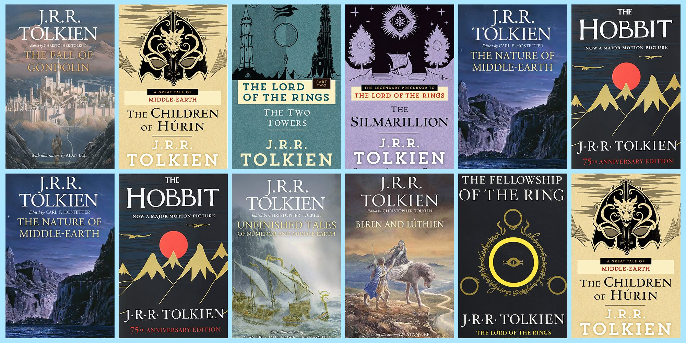

Books
The Lord of the Rings is an epic high-fantasy novel by English author and scholar J. R. R. Tolkien. Set in Middle-earth, intended to be Earth at some distant time in the past, the story began as a sequel to Tolkien's 1937 children's book The Hobbit, but eventually developed into a much larger work. Written in stages between 1937 and 1949, The Lord of the Rings is one of the best-selling books ever written, with over 150 million copies sold.
The title refers to the story's main antagonist, the Dark Lord Sauron, who in an earlier age created the One Ring to rule the other Rings of Power given to Men, Dwarves, and Elves, in his campaign to conquer all of Middle-earth. From homely beginnings in the Shire, a hobbit land reminiscent of the English countryside, the story ranges across Middle-earth, following the quest to destroy the One Ring mainly through the eyes of the hobbits Frodo, Sam, Merry and Pippin.
Although often called a trilogy, the work was intended by Tolkien to be one volume of a two-volume set along with The Silmarillion. For economic reasons, The Lord of the Rings was published over the course of a year from 29 July 1954 to 20 October 1955, in three volumes titled The Fellowship of the Ring, The Two Towers, and The Return of the King. The work is divided internally into six books, two per volume, with several appendices of background material. Some later editions print the entire work in a single volume, following the author's original intent.